ImageMagick Examples --
 Montage, Arrays of Images
Montage, Arrays of Images
- Index
 ImageMagick Examples Preface and Index
ImageMagick Examples Preface and Index
 Montage, Introduction and General
Montage, Introduction and General
- Geometry - Tile Size (Image Resize)
- Geometry - Tile Spacing
- Tile Layout Controls
- Frame Decoration
- Border Decoration
- Shadow Decoration
- Labeling Montage Images
- Using Saved Image MetaData
- Leaving Gaps in a Montage
Montage Settings
- Montage Color Settings
- Montage Control Settings
- Re-Using Settings for Image Read/Creation
- Montage vs Magick Option Differences
Indexes of Image Directories
- HTML Thumbnail Image Maps (basic index map)
- Smaller HTML Index Maps, using JPEG images
- Visual Index (A non-montage solution)
- A Montage of Polaroid Photos (a fancy index map)
Special Techniques in using Monatge
magick montage" is to generate tables of image
thumbnails, that is, to reference thumbnails of large collections of images,
especially photos. And while it still can be used for that purpose, it can
also do a lot more. This page examines what you can do with montage, and how
you can use it on your own images.
Montage, Introduction
The "magick montage" command is designed to produce an array of thumbnail
images. Sort of like a proof sheet of a large collection of images.
The default "magick montage" with no options is very plain, with quite large
containment squares, no frame, labels, or shadows.
magick montage balloon.gif medical.gif present.gif shading.gif montage.jpg |
![[IM Output]](montage.jpg)
Geometry - Tile Size and Image Resizing
The "-geometry"
setting, is the most important control of "magick montage". It
defines the size of the individual thumbnail images, and the spacing between
them.
The size part of the geometry is used as an argument to the Resize Operator, including all its special
purpose flags. The position part of the option is interpreted as the amount
of border space to leave around the image, so making this smaller, will make
the gaps between the images smaller.
The default "-geometry" setting is '120x120>+4+3' which means to
fit any image given into a box 120x120 pixel in size. If the image is larger
shrink it, but don't resize smaller images (as per the Only Shrink Larger ('>') Flag.
The 'tile' size is then set to the largest dimentions of all the
resized images, and the size actually specified. That means you will never
get a tile size that is smaller than the specified "-geometry" size.
You can remove huge size of the tiles in the previous example space by
modifing the "-geometry" default. For example by removing the 'size' component,
none of the images will be resized, and the 'tile' size will be set to the
largest dimensions of all the images given.
For example here I ask montage to tile using the largest image given with
a small gap between tiles. This is a very typical setting to use when all the
input images are small and roughly same size.
magick montage balloon.gif medical.gif present.gif shading.gif \
-geometry +2+2 montage_geom.jpg
|
48x48' to resize both smaller and larger
images.
magick montage balloon.gif medical.gif present.gif logo: \
-geometry 48x48+2+2 montage_geom_size.jpg
|
magick montage balloon.gif medical.gif present.gif logo: \
-geometry 48x48\>+2+2 montage_geom_larger.jpg
|
![[IM Output]](montage_geom_larger.jpg)
1x1<' which tells
IM to only resize smaller images to the given size. As no image can be
smaller that 1 pixel, no image will be resized. The tile size will thus be
again the largest dimention of all the images on the page. See Zero Geometry, caution required for reasons why you
may like to do this.
Geometry - Tile Spacing
The positional part of the "-geometry" setting, will add space between the individual 'tiles',
by adding a Border of those dimensions around
the tiles before Appending them together.
That means for the default "-geometry" setting, of '+4+3', the tiles will be
spaced from the left and right edges of the final image by 4 pixels, and will
have a 8 pixel (twice the size given) spacing horizontally between the tiles.
The same goes for the vertical spacing.
Note how the space bewteen the tiles when all the images were resized (second
last example) is twice the size of the space around the edges.
Tile Layout Controls
The next most important option in "magick montage" is the "-tile" setting. This tells montage
what limits you want on how the tiled images are to be laid out on the final
result.
In ImageMagick version 6 "magick montage" will make an educated guess as
to how best to tile a given number of images, when you provide no "-tile" hints. It does however
assume that the images being tiled are roughly squarish in nature, as it does
not look at the images aspect ratios, when deciding on the tiling to use.
magick montage font_1.gif -geometry 16x16+1+1 tile_1.gif magick montage font_[12].gif -geometry 16x16+1+1 tile_2.gif magick montage font_[123].gif -geometry 16x16+1+1 tile_3.gif magick montage font_[1-4].gif -geometry 16x16+1+1 tile_4.gif magick montage font_[1-5].gif -geometry 16x16+1+1 tile_5.gif magick montage font_[1-6].gif -geometry 16x16+1+1 tile_6.gif magick montage font_[1-7].gif -geometry 16x16+1+1 tile_7.gif magick montage font_[1-8].gif -geometry 16x16+1+1 tile_8.gif magick montage font_[1-9].gif -geometry 16x16+1+1 tile_9.gif magick montage font_[0-9].gif -geometry 16x16+1+1 tile_0.gif |
![[IM Output]](tile_1.gif)
![[IM Output]](tile_2.gif)
![[IM Output]](tile_3.gif) 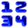
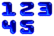
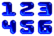
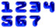
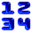
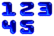
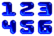
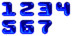
![[IM Output]](tile_8.gif)
![[IM Output]](tile_9.gif)
![[IM Output]](tile_0.gif)
The strange "[1-5]" syntax is an UNIX shell shorthand, which
is expanded into a list of filenames. The "magick montage" command
itself does not see these characters, just the resulting list of files.
|
-tile" setting to use for a
specific number of input images. Here is a table of number of input images
and the tile setting IM will used to layout those images.
|
|
|
-tile" setting, montage will always create an image big enough to
hold that many 'tiles'.
magick montage font_[1-7].gif -tile 9x1 -geometry 16x16+1+1 tile_9x1.gif magick montage font_[1-7].gif -tile 4x3 -geometry 16x16+1+1 tile_4x3.gif magick montage font_[1-7].gif -tile 3x3 -geometry 16x16+1+1 tile_3x3.gif magick montage font_1.gif -tile 2x3 -geometry 16x16+1+1 tile_2x3.gif |
![[IM Output]](tile_9x1.gif)
![[IM Output]](tile_4x3.gif)
![[IM Output]](tile_3x3.gif)
Before IM v6.1 montage would automatically truncate the extra space if the
number of images did not use that space. As such a setting such as the
first "9x1" image would have been truncated to produce a
"7x1" tile image.
Because of this, past users of montage often used large numbers such as
" |
-tile"
setting. The missing number will be taken by montage as being variable and
montage will only create enough tile space to hold ALL the input images,
producing only one image, never multiple images.
magick montage font_[1-7].gif -tile x1 -geometry 16x16+1+1 tile_x1.gif magick montage font_[1-7].gif -tile x2 -geometry 16x16+1+1 tile_x2.gif magick montage font_[1-7].gif -tile x4 -geometry 16x16+1+1 tile_x4.gif magick montage font_[1-7].gif -tile 4x -geometry 16x16+1+1 tile_4x.gif magick montage font_[1-7].gif -tile 5x -geometry 16x16+1+1 tile_5x.gif magick montage font_[1-7].gif -tile 9x -geometry 16x16+1+1 tile_9x.gif |
![[IM Output]](tile_x1.gif)
![[IM Output]](tile_x2.gif)
![[IM Output]](tile_x4.gif)
![[IM Output]](tile_4x.gif)
![[IM Output]](tile_5x.gif)
![[IM Output]](tile_9x.gif)
-tile" setting, as it ensures the montage is sized correctly,
while still allowing it some control in determining the final array size.
Note the last image, in the above where we requested 9 columns of images. IM
still generated the requested 9 columns, even though less than 9 images were
given. On the other hand the first image (one row requested), is exactly the
right length to hold all the images.
If you have more input images than montage can tile into the space given by a
"-tile" setting, then
multiple images can be generated by montage, either resulting in image
sequence numbers being added to the filename, or some sort of GIF animation,
being created. See Writing Multiple Images
for details.
For example, here I have asked montage to save separate images for each page
generated, by supplying a '%d' for the frame/scene/page number of
each image filename.
![[IM Output]](multi_1.gif)
{kind=link}
{kind=link}
{kind=link}
{kind=link}
{kind=link}
{kind=link}
{kind=link}
{kind=link}
{kind=link}
Frame Decoration
The best part of using montage to arrange images is that it provides a lot of extra controls to add extra 'fluff' around each image. For example, you can better define the images being displayed by adding a "-frame" around each
image.
magick montage balloon.gif medical.gif present.gif shading.gif \
-tile x1 -frame 5 -geometry +5+5 frame.jpg
|
![[IM Output]](frame.jpg)
magick" (See Adding a 3D frame example). The montage frame
option will automatically figure out default values for the internal and
external bevel of the frame. As such only a single argument number is needed.
Border Decoration
Sometime around IM v6.1.0, "-border" became a new decorative option of montage. It now
adds extra 'padding' around each image, after it has been resized according
ot the "-geometry"
setting.
magick montage balloon.gif medical.gif present.gif shading.gif \
-tile x1 -border 5 -geometry +5+5 border.jpg
|
![[IM Output]](border.jpg)
The "-border"
decoration does not currently work when the Frame
Decoration is also applied.
|
Before IM v6.1.0 (approx) -border would been applied to images at the point in
which it appeared in the "magick montage" command line, just like
it would have with "magick".
That is border would have been thus added to the image long before the
images get resized (according to "-geometry"), which resulted in different border widths
around each image depending on the size of the image at that point. It
was to remove this inconsistancy that -border became a special montage setting.
|
Shadow Decoration
Adding a shadow with the frame is also quite good.
magick montage balloon.gif medical.gif present.gif shading.gif \
-tile x1 -frame 5 -shadow -geometry +5+5 frame_shadow.jpg
|
![[IM Output]](frame_shadow.jpg)
magick montage balloon.gif medical.gif present.gif shading.gif \
-tile x1 -shadow -geometry +5+5 -background lightblue \
shadow_noframe.jpg
|
![[IM Output]](shadow_noframe.jpg)
|
![[IM Output]](shadow_shaped.png)
|
-geometry" spacing between the images. As such if the
images are too close together, the shadow of previous images can be obscured
by later images. For example...
magick montage balloon.gif medical.gif present.gif shading.gif \
-tile x1 -shadow -geometry +1+1 -background none \
shadow_spacing.png
|
![[IM Output]](shadow_spacing.png)
-geometry" spacing be
provided when using shadow.
To avoid 'edge clipping' shadows to much, the "-shadow" option will add
4 extra edge spacing pixels the right and bottom edges of the final image.
This is on top of the normal "-geometry" spacing provided. However as you can see above,
this is not always enough space.
Montage currently also provides no controls for the offset, color or the
'softness' of the generated shadow (at least not yet), but then, you didn't
have such control with hard rectangular shadow that was provided by older
versions of montage.
Labeling Montage Images
You can also tell montage to label the image with their source filenames, though you probably need to resize the image frames, or the labels may not fit, truncating the text label. In this case we added a "60x60>" to the geometry string, which
tells IM to shrink larger images to fit into this space, but not to
enlarge images if they are smaller.
This is probably the most typical use of montage.
magick montage -label '%f' balloon.gif medical.gif rose: present.gif shading.gif \
-tile x1 -frame 5 -geometry '60x60+4+4>' label_fname.jpg
|
![[IM Output]](label_fname.jpg)
%f' is a special format character, which can pull out
various details about the images in memory. See Image Property
Escapes for details of other information you can extract from images.
You don't have to use a "-frame" when labeling thumbnails. The labels are not shadowed, so
that they remain clearly readable.
montage -label '%f' balloon.gif medical.gif logo: present.gif shading.gif \
-tile x1 -shadow -geometry '60x60+2+2>' label_shadow.jpg
|
{kind=link}
-set"
image attribute operator.
Lets use the "-set"
operator to add more information about the images. And also few more montage
settings...
magick montage balloon.gif medical.gif logo: present.gif shading.gif \
-tile x1 -geometry '90x32+2+2>' -pointsize 10 \
-set label '%f\n%wx%h' -background SkyBlue label_fname3.jpg
|
![[IM Output]](label_fname3.jpg)
-label" setting to define the
default label for an image, as they are read in, or you can re-label the image
afterward using the "-set"
operator.
Note that '%wx%h gives the current pixel width and height of
the image as it is in memory. If the image size was modified, such as
during input this may be different to the images in disk (or creation) size.
Use '%[width]x%[height]' instead if you want its in memory
pixel size.
|
-set"
operator will be applied to.
Here for example we use both forms of labeling. But lets also add a title to
the montage, just because we can...
magick montage -label Balloon balloon.gif \
-label Medical medical.gif \
\( present.gif -set label Present \) \
\( shading.gif -set label Shading \) \
-tile x1 -frame 5 -geometry '60x60+2+2>' \
-title 'My Images' titled.jpg
|
![[IM Output]](titled.jpg)
-label
'' " or "+label". However as you will see later these
two settings are not quite the same. The same applies for a post reading,
label "-set" operation.
magick montage balloon.gif \
-label 'My Image' medical.gif \
+label present.gif \
-label ' ' shading.gif \
-tile x1 -frame 5 -geometry '60x60+2+2>' labeling.jpg
|
![[IM Output]](labeling.jpg)
Either label all your images, or none of them!
You don't have to label your images during the montage operation itself. Both
the MIFF and PNG formats, can store a label as part of their image format.
Montage will automatically label any image read in that already contains a
label. This is automatic and does not need to be specified, and I have used
this technique to generate some very complex image montages. For example the
montage array in Annotate Angle Examples was
created using this technique.
If you do not want this automatic labeling, you must specifically tell montage
to reset all the labels being read in or created to the empty string, using
"-label ''" before reading the image. Or you can
just delete the label meta-data using "+set label"
after reading the images.
This is where "+label"
differs from using an empty label ("-label ''"). The former
will reset the default behavior back to automatically using any label
meta-data that the image being read-in may have , while the later replaces the
label with an empty string, which effectiavvly removes the label. You can also
preserve the original label of the image using
"-label '%l'", which can be usful as a NO-OP labeling option
in image processing scripts.
Note that "-set" cannot
restore the original label of an image, once it has been modified or removed,
either by using "-label"
or "-set"
magick -label 'medical' medical.gif label_medical.png
magick -label 'logo' logo: label_logo.png
magick -label 'rose' rose: label_rose.png
magick montage label_medical.png \
-label '' label_logo.png \
+label label_rose.png \
-tile x1 -frame 5 -geometry '60x60+2+2>' label_control.jpg
|
![[IM Output]](label_control.jpg)
-label '' " setting, while the third also used the
images label because we turned-off the label setting with
"+label".
Using Saved Image MetaData
When generating images for later use by montage it is important to know what sort of image metadata a specific image file format can save. For example only PNG, and MIFF image file format can actually store 'label' meta-data in their saved image file format...
magick -label 'GIF' balloon.gif label.gif
magick -label 'JPG' medical.gif label.jpg
magick -label 'PNG' present.gif label.png
magick -label 'MIFF' shading.gif label.miff
montage label.gif label.jpg label.png label.miff \
-tile x1 -frame 5 -geometry '60x60+2+2>' label_files.jpg
rm label.*
|
![[IM Output]](label_files.jpg)
comment'
meta-data, which you can use by specifying a '%c' argument to
"-label".
magick -comment 'GIF' balloon.gif comment.gif
magick -comment 'JPG' medical.gif comment.jpg
magick -comment 'PNG' present.gif comment.png
magick -comment 'MIFF' shading.gif comment.miff
magick montage -label '%c' comment.gif comment.jpg comment.png comment.miff \
-tile x1 -frame 5 -geometry '60x60+2+2>' comment_files.jpg
rm comment.*
|
![[IM Output]](comment_files.jpg)
caption' meta-data.
magick balloon.gif -set caption 'GIF' caption.gif
magick medical.gif -set caption 'JPG' caption.jpg
magick present.gif -set caption 'PNG' caption.png
magick shading.gif -set caption 'MIFF' caption.miff
magick montage -label '%[caption]' caption.gif caption.jpg caption.png caption.miff \
-tile x1 -frame 5 -geometry '60x60+2+2>' caption_files.jpg
rm caption.*
|
{kind=link}
magick balloon.gif -set my_data 'GIF' my_data.gif
magick medical.gif -set my_data 'JPG' my_data.jpg
magick present.gif -set my_data 'PNG' my_data.png
magick shading.gif -set my_data 'MIFF' my_data.miff
magick montage -label '%[my_data]' my_data.gif my_data.jpg my_data.png my_data.miff \
-tile x1 -frame 5 -geometry '60x60+2+2>' my_data_files.jpg
rm my_data.*
|
![[IM Output]](my_data_files.jpg)
Leaving Gaps in a Montage
While you can leave extra space in a montage at the bottom by judicious use of the "-tile" setting and
controlling the number of images given, leaving an empty tile space in the
middle of a montage requires the use of a special image.
The "null:" generated image was defined specifically for this
purpose. The position in which it appears will not receive any label (even if
one is defined), nor will it have any frame or shadow 'fluff' added. The tile
is just left completely empty except for the background color (or texture) of
the montage drawing canvas itself.
magick montage -label 'Image' medical.gif null: present.gif \
-tile x1 -frame 5 -geometry +2+2 montage_null.jpg
|
![[IM Output]](montage_null.jpg)
null:" image is represented a
single pixel transparent image. It is also used as a 'error image' for
options like "-crop" or
"-trim" which
could produce a 'zero' or empty image as a result of the operation.
This special image cannot be saved and then later used to leave gaps,
currently it is only 'special' if given on the command line of
"magick montage".
| There is no method, at this time to allow montaged images to span multiple rows or columns, as you can in HTML tables. Nor can you generate variable sized rows and columns to best fit the array of images being generated. If you really need this sort of ability you will need to develop your own montage type of application. If you do develop something, then please contribute, and we'll see about merging it into the existing montage application. Some solutions for this includes labeling and framing the image thumbnails yourself and then using either Append Images or use a more free form Layering Image technique. |
More Montage Settings
The "magick montage" settings I have shown above are only the basic
controls for montage. Their are a lot of other settings you may like to
consider for your own needs.
Montage Color Settings
-background |
The color outside the drawn frame. Often this is set to the
'none' or 'transparent', for use on web pages.
The -texture setting will
be used instead if given. |
-bordercolor |
The fill color inside the frame for images, or any border padding. Any transparent areas in an image will become this color, unless no such decoration is added. |
-mattecolor |
The color used as the frame color. Note that the color is also made lighter and darker to give the frame a beveled 3D look. So this setting really defines 5 colors. (See also Framing Images) |
-fill |
The fill color for text labels and titles. |
-stroke |
The stroke color for text labels and titles. |
Montage Control Settings
Added to the above are all the font settings that the "
-tile {cols}x{rows}- The number of images across and down used to fill a single montage image. If more images were read in or created than fits in a single montage image, then multiple images will be created. (See Tile Controls above)
-title {string}- Set a title over the whole montage, using the same font (but larger) as that used to label the individual images.
-frame {width}- Create a frame around the box containing the image, using the width provided (must be at least 2, but 5 or 6 is a good value). If used any transparency in images will also become the border color.
-border {width}- Create a border around the image, using the width provided. If used any transparency in images will also become the border color.
-shadow- Generate a shadow of the frame. Note that no argument is required or expected.
-texture {filename}- Use the given texture (tiled image) for the background instead of a specific color. See the section on Background and Transparency below for more information.
-geometry {W}x{H}+{X}+{Y}- Resize images after they have all been read in before montage overlays them onto its canvas. It also defines the size and the spacing between the tiles into which the images are drawn. If no size is specified the images will not be resized.
-gravity {direction}- if the image is smaller than the frame, where in the frame is the image to be placed. By default it is centered.
label:"
image creation operator understands (See Label Image
Generator). These settings are used for the creation of labels added
underneath the displayed image.
These include settings such as "-font", "-pointsize" (ignored for "-title"),
"-density",
"-fill",
"-stroke", and
"-strokewidth".
As long as any or all of the above setting are defined or reset, before the
final 'output filename' argument, montage will use them as you have requested.
Re-Using Settings for Image Read/Creation
Note however that many of these options are also used for other purposes, in either the generation of images or during image processing. But thanks to the 'do things as you see them' command line handling on IM v6, this presents no problem to the "magick montage" command.
That means you are free to use any of these option settings to read, create,
or modify the images being read in, then reset those settings after all the
images have been read in or created. The final setting value will be what
montage will use for its final processing.
This was not the case in versions of IM before version 6, in which it was
generally impossible to separate image creation settings, from montage
settings, without generating intermediate images (such as in the Image Labels example above).
Here is a practical example of setting reuse. I wanted to make a table of some
of the fonts I have been using in these example pages, then reset the
settings to other values for the final processing of the images by montage.
magick montage -pointsize 24 -background Lavender \
-font Candice -label Candice label:Abc-123 \
-font Corsiva -label Corsiva label:Abc-123 \
-font SheerBeauty -label SheerBeauty label:Abc-123 \
-font Ravie -label Ravie label:Abc-123 \
-font Arial -label Arial label:Abc-123 \
-font ArialI -label ArialI label:Abc-123 \
-font ArialB -label ArialB label:Abc-123 \
-font ArialBk -label ArialBk label:Abc-123 \
-font CourierNew -label CourierNew label:Abc-123 \
-font LokiCola -label LokiCola label:Abc-123 \
-font Gecko -label Gecko label:Abc-123 \
-font Wedgie -label Wedgie label:Abc-123 \
-font WebDings -label WebDings label:Abc-123 \
-font WingDings -label WingDings label:Abc-123 \
-font WingDings2 -label WingDings2 label:Abc-123 \
-font Zymbols -label Zymbols label:Abc-123 \
\
-frame 5 -geometry +2+2 -font Arial -pointsize 12 \
-background none -bordercolor SkyBlue -mattecolor DodgerBlue \
montage_fonts.gif
|
{kind=link}
magick montage" command. Which I clearly
marked using an extra almost empty line.
The first part is essentially exactly as you would define multiple images
using the normal IM "magick" command, and is processed in the
same, 'do it as you see it' order.
The second part, defines all the settings I wanted the
"magick montage" command itself to use. That is the framing, image
resizing, fonts and colors I wanted to use in the final montage image. I
especially take care to reset the "-font" and "-pointsize" settings for the labeling underneath the montaged
images.
While you can separate the options of "magick montage" like this, you
can actually define the montage settings at any time on the command line. As
long as those settings do not interfere with your image creating and
processing options, and are still defined correctly when the end of the
command line is reached, "magick montage" will use them.
ASIDE: You may like to look at the shell script I wrote to do something
similar to the above (and which works with earlier versions of montage) to
display a directory of truetype (.ttf) fonts, called "show_fonts". Another shell
script example is "show_colors".
Montage vs Magick Option Differences
Now while "magick montage" generally allow you to use any
"magick" settings and operators in reading and processing its
input images, their are a few differences which need to be highlighted.
These "magick" operators and settings are different when used
within "magick montage".
If you really need to use the "
-tile- In "
magick" the "-tile" setting defines an image to use as a texture instead of using the "-fill" color. In "magick montage" it defines how to layout the individual image cell 'tiles'. See Tile Layout Controls above for more detail.-frame- In "
magick" this is an operator used to add a 3D frame border around images, and requires 4 arguments to work correctly (See Convert Frame examples). See Frame Decoration for more detail.-border- Sometime around IM v6.1.0 this operator became a special montage option. As such, like the previous frame option it only takes one number as an argument, rather than two arguments as per the Convert Border. See Border Decoration for more detail.
-shadow- The "
-shadow" option in "magick" takes an argument which is used to create a soft blurry shadow to which can be place under a second copy of the original image. However in "magick montage" this is only a Boolean setting that just turns the rectangular shadowing abilities, on and off. See Shadow Decoration for more detail.-geometry- The "
-geometry" option in "magick montage" is simply saved to provide the size of the images within each cell of the final montage, and the spacing between the cells. In "magick" it resizes just the last image, and sets the off set for Image Composition.
magick" form of these options,
then you will need to pre-process your images using "magick"
before passing them to "magick montage".
One method using intermediate files was demonstrated in the Image Labels example above.
Another is to just do your processing in "magick" and just pipe
the resulting multiple images into "magick montage". This separation is
easy to do if you always do your image input handling first, then set the
"magick montage" specific settings afterward, such as I have done in all
these examples. This is especially shown in the last font example above.
For example lets frame our images using the "magick" frame,
and then frame them again using the "magick montage" labeled frames.
magick -label %f balloon.gif medical.gif present.gif shading.gif \
-mattecolor peru -frame 10x5+3+0 miff:- |\
magick montage - -tile x1 -frame 5 -geometry '64x56+5+5>' double_frame.jpg
|
![[IM Output]](double_frame.jpg)
magick"
form of the "-frame"
operator.
Indexes of Image Directories
HTML Thumbnail Image Maps
Montage is especially designed for generating thumbnail maps of images. For example here I have created an index of the Photo Images source directory, which holds the digital photos used for examples throughout IM Examples. Click the 'art' image below to view the result.
|
IM Examples Photo Store |
Note the use of '%[width]x%[height]' instead of just
'%wx%h'. This is important as the image is being resized as it
is read in. The former will label the images with their original pixel size
as it is on disk, while the latter will use the current resized size of the
image. This is something that is easily overlooked by users.
|
Of course you don't have to generate an HTML index file if you only want an index image. In that case just replace "
photo_index.pngThe montage of all thumbnails of the images photo_index_map.shtmlAn HTML 'image map' for the thumbnail image photo_index.htmlThe HTML thumbnail index page for the World Wide Web.
This also includes a copy of the previous image map.
{kind=link}
INDEX.html" in the
command above with the image you want to generate.
Note the use of the Image Property Escape '%t' for the image "-label". This is the filename of
the image without any 'path' components. Though the HTML link will still
contain the appropriate 'path' components allowing you to build the index
image in a different directory to the images themselves.
The source images "'*_orig.*'" in the above examples is quoted,
so the "magick montage" command does the expansion of '*' itself, and
not the command line shell. This avoids any command line length limits that
you may have problems with. Also I do some initial resizing of images
'[120x190]' as I read them (see Read Image Modifiers).
For JPEG images I also specified a smaller "-size" setting so the JPEG library
can do some very rough initial scaling, and not read the whole image into
memory. If this is not done, then very large JPEG images could use up an
enormous amount of memory and CPU cycles when there is no real need. I also
"-strip" any profiles
that the images may have. For more info see Profiles, Stripping, and JPEG Handling and Reading JPEG Images.
Remember the montage "-geometry" option can also specify a final resize setting, though
in this case it is isn't needed as I did it during the read process, so I
don't set any 'size' in that setting.
Finally the "-tile" option
of '5x' is used to ensure all images appear in a single image,
otherwise "magick montage could generate a multi-page HTML files, which
are not correctly linked together. This will hopefully change, though HTML
generation is not a primary goal of ImageMagick.
For other ways of generating thumbnails and HTML index pages, read the
Thumbnail Examples Page.
Smaller HTML Index Maps, using JPEG images
The above index image generated a PNG format index image. This was used because it is a non-lossy format, which can be important when the images being indexed are of wildly different colors. It also enables the use of the new 'soft shadows' features of montage if the background color is set to 'transparent' or 'none'.
Very very old IM's will have generated a GIF image for the above. However,
this has some heavy color reduction on the results as part of the formats
limitations. It also did not allow the use of semi-transparent 'soft shadows'
as PNG allows.
JPEG also does not allow semi-transparency, but that is not a problem if you
do not use a transparent background for the image. It is however a lot smaller
than PNG, which provides a way to drastically reduce the size of the index
image, especially for web use, and still handle a large range of colors.
However, HTML output above only generates PNG format images, so you will need
to not only magick the PNG to JPEG, but also some extra processing to fix the
HTML file.
|
IM Examples Photo Store |
- First I generate a montage thumbnail HTML index, as I did previously.
This generated the files: "
photo_jpeg.html" and "photo_jpeg.png" - I then converted the PNG image to a smaller, lossy, JPEG image.
- Then I used a small '
perl' one line script to change HTML file to use the JPEG image instead of PNG. - And finally I removed the PNG image, as well as the SHTML map file which I don't need.
-quality" setting, though the
default setting produces a very reasonable result. Other
possible options include using "-sampling-factor 2x1" to
make it even smaller.
Visual Index Images (a non-montage solution)
An alternative to using montage, is to use a special "visual index" input format...
|
Visual Index of Photo Store |
|
Visual HTML of Photo Store |
VID:" uses montage internally to generate the
index array. However you do not have the same controls as you do if you had
used montage directly.
Note that a VID HTML index creates a PNG format thumbnail image.
A Montage of Polaroid Photos
With the advent of a Complex Polaroid Transform it is now possible to generate quite a different style of montage, and montage indexing.
|
Polaroid Montage |
+polaroid" to frame and label the images, I needed to resize the
image (using "-thumbnail") myself, and make sure the "-background" and image
"-label" has been reset
before actually creating the "magick montage" index array.
The Polaroid Transform however tends to
blur the text during the addition of the 'curl' to the thumbnail image.
However you can improve the overall by generating the polaroid images at a
larger size then shrinking the result by 50%. The only drawback is the
reduced 'shadow' effect.
|
Sharper Polaroid Montage |
generate_index" to generate a montage thumbnail index in the
actual "photo_store" directory.
See Photograph Store Index for the
results of this script.
Special Techniques using Montage
Montage into Columns
By default "magick montage" can only place the images in the order given
(typically sorted order) row by row. However sometimes you would like to have
them shown in column order.
This can not be done with a single command, but requires a pipe-line of at
least two commands. For example here I generate a page of 5x3 tiles, using
two montages.
| 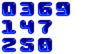 |
{kind=link}
magick montage" that creates the tiles and
performs any of the geometry tile sizing, framing, labeling and spacing
needed. It will then output one image for each column of tiles. The second
"magick montage" then simply contatanates the columns into 'page' images
without adding any more space between columns.
If you only want a single image of a variable number of columns, then you can
replace the second "magick montage" with a "magick" to
concatanate without adding extra space of 'pages'. For example...
|
![[IM Output]](montage_columns_2.gif)
|
Overlapped Montage Tiles
In the IM User Forum, during a discussion between, Fred Weinhaus , aka fmw42 and another user pooco, it was discovered that if you set the inter-tile space (set in the "-geometry" setting) to
a negative number you can actually overlap the tiled areas into which the
images are drawn.
For example, here we use a negative horizontal inter-tile spacing, for a
single row of images.
magick montage null: font_*.gif null: \
-tile x1 -geometry -5+2 montage_overlap.jpg
|
![[IM Output]](montage_overlap.jpg)
magick montage null: font_*.gif null: -background none -rotate 30 \
-background white -tile x1 -geometry -8+2 montage_rot_overlap.jpg
|
{kind=link}
null:", spacing image
at the start and end of the row of images so the images do not overflow the
canvas, "magick montage" calculates and generates.
This presents us with some interesting possibilities. For example you could
generate a very interesting row of overlapping thumbnails, by making use of
the randomly rotated Polaroid Transform.
|
{kind=link}
+polaroid" can produce on
different 'runs', giving more control of the final spacing and overlap between
images.
This is a very interesting result, though it should actually be classed as a
BUG, as this is not the intended purpose of "magick montage". I also
would not expect any HTML image mapping to work correctly, without some
fixing by the user.
However a more complex, and user controllable solution for overlapping images
is demonstrated using a scripted form of Layer
Merging, which is the recommended and more logical solution. See examples
in Programmed Positioning of Layered Images.
Montage Concatenation Mode
As you saw, montage has a special concatenation mode, which can be used to join images together without any extra spaces just like the "-append" option. I do however
recommend you set the "-tile" option appropriately, so as to direct the appending either
horizontally, vertically or in an array.
For example here we use a "-tile x1" to append images
horizontally.
magick montage balloon.gif medical.gif present.gif shading.gif \
-mode Concatenate -tile x1 montage_cat.jpg
|
![[IM Output]](montage_cat.jpg)
magick montage balloon.gif medical.gif present.gif shading.gif \
-mode Concatenate -tile 2x2 montage_array.jpg
|
![[IM Output]](montage_array.jpg)
magick montage medical.gif rose: present.gif shading.gif \
granite: balloon.gif netscape: recycle.gif \
-mode Concatenate -tile 4x montage_cat2.jpg
|
![[IM Output]](montage_cat2.jpg)
magick montage medical.gif rose: present.gif shading.gif \
granite: balloon.gif netscape: recycle.gif \
-mode Concatenate -tile 4x -frame 5 montage_cat3.jpg
|
{kind=link}
-frame" is set before the
"-mode" setting, it will
be turned off. As such this quirk is not likely to be seen, except by mistake
when you accidentally use a 'zero geometry' (see below).
| Montage Concatenation to the 'HTML' image indexing format, produces incorrect image maps. Basically the resulting image map will be as if the generated montage was a true equally divided 'array' of images, rather than a concatenation of the images in line. In other words it is wrong for lines of 'short' images. |
Zero Geometry, caution required
With only "-geometry" spacing values (no image resizing specified), all
montages image frames are set to the same size, so that both the widest and
tallest image will fit, without being resized.
This is itself an useful behaviour...
However a 1 pixel gap was left around and between the image frames.
But if you try to remove those gaps with a position of "{kind=link}
+0+0",
you run into a very unusual problem...
magick montage present.gif rose: shading.gif \
-tile x1 -frame 5 -geometry +0+0 montage_geom_0.jpg
|
![[IM Output]](montage_geom_0.jpg)
-geometry 0x0+0+0" ),
has the extra effect of putting montage in a 'concatenation' mode (see above),
which is NOT what we were after in the above.
For single images it also does not matter if we use a zero "-append" (and thus concatenation
mode). The desired result is what we want, no extra borders. As such a
"-geometry +0+0" is fine if you are only using
"magick montage" to add a label to an
image.
The concatenation mode will however not be invoked if you specify a non-zero
geometry 'size' for your images, even though you used a zero offset. This in
turn gives us a tricky solution to our original problem.
What we do a set a geometry image size of "1x1" but also tell IM,
never to shrink images (using a "<" character) to this size!
In other words, never resize an image ever, just use a zero offset, in a
non-zero geometry argument.
magick montage present.gif rose: shading.gif \
-frame 5 -geometry '1x1+0+0<' montage_geom_1x1.jpg
|
{kind=link}
Always set a non-zero geometry when using montage
Even if it is only the 'fake' geometry such as I used above.
Background and Transparency Handling
By default images are overlaid onto the montage canvas, which is created using the "-background"
color setting, as you can see here.
|
{kind=link}
-texture" to define a tile image
to use instead of the "-background" color.
|
{kind=link}
| 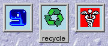 |
{kind=link}
-bordercolor" setting will be used to fill in the inside the
frame, effectively becoming the background color of the image. Also
notice that any transparent areas of the image are also set to this color.
| Before version 6.1.4 of IM, what was seen in the transparent areas of images was undefined. In some versions you would see through the framed image to the background color or texture. On others you might get black, or white. In still other versions you would be able to see though all the layers and the final image would be transparent where the original image was transparent. Upgrade NOW if this is a problem for you. |
-bordercolor" padding around
(and underneath) the image. For example compare a frame of '1'
with the minimal frame width of '2'.
| 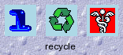 | |
|
![[IM Output]](bg_frame_2.gif)
|
{kind=link}
-background" color of 'None' or
'Transparent', without any "-texture" image to override that
setting.
For example here we generated a transparent montage. Note that "-geometry" is still used to add
space around and between the images.
|
![[IM Output]](bg_none.gif)
|
-frame", you need to make the "-bordercolor" transparent
too.
|
![[IM Output]](bg_framed_trans.gif)
|
-shadow" option is completely unaffected by all the above.
it is applied according to the final transparent shape of the cells, before
it is overlaid onto the background color or texture.
|
![[IM Output]](bg_shadow.gif)
|
|
{kind=link}
Any suggestions, ideas, or other examples of using "
magick montage" are
of course always welcome. The same goes for anything in these example pages.
Montage Image Output Size The mathematics of montage is straight forward... Basically the montage width should be.... (geometry_size + 2*frame_size + 2*geometry_offset) * images_per_column That is each 'cell' of montage has a fixed sized frame and spacing (border) added around it before the cells are appended together. In essence the size of montage is also a multiple of the tile size, which can make it easy to break up montage, or re-arrange the 'cells', if so desired, as they are simple fixed sized tiles in a rectangular array. The height is similar but with tha additional spacing needed for labels and the optional montage title, both of which are much more difficult to calculate, as they depend heavilly on text, font, pointsize, and density settings. There is also an effect of adding a shadow to the montage in this calculation, but that appears to be a simple small fixed addition to the bototm and right edges. It does not appear to effect the tile size used.